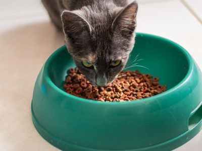
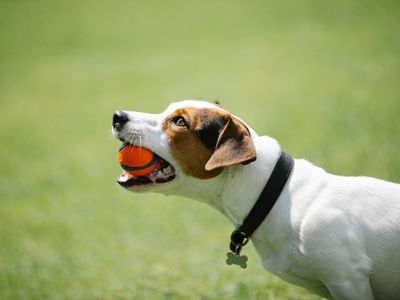
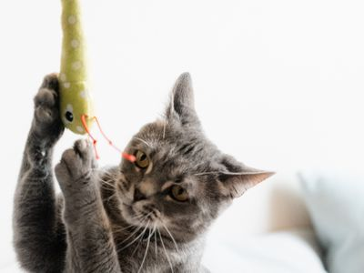
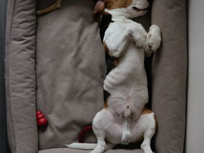
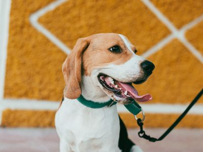

Ração seca completa e balanceada para cães adultos de porte médio e grande. Feita com proteínas de alta qualidade e enriquecida com ômega 3 e 6, que ajudam a manter o pelo brilhante e a pele saudável.
Valor: R$ 189,90
Ração para Gatos Castrados – 3 kg

Ração seca para gatos adultos castrados, com controle de calorias e fibras que ajudam a evitar bolas de pelo. Grãos pequenos, fáceis de mastigar.
Valor: R$ 79,90
Brinquedos
Bola de Borracha Maciça

Bola de borracha natural, maciça e resistente, ideal para brincadeiras de buscar e para cães que adoram morder. Pode ser lavada com água e sabão.
Valor: R$ 29,90
Varinha Interativa para Gatos

Varinha flexível com um brinquedo de pelúcia preso a um cordão. Estimula o instinto de caça, ajuda o gato a gastar energia e aproxima o pet do tutor durante a brincadeira.
Valor: R$ 24,90
Acessórios
Cama Acolchoada – Tamanho M

Cama macia com bordas elevadas para o pet apoiar a cabeça. Medidas: 60 x 50 cm. A capa é removível e pode ser lavada na máquina.
Valor: R$ 149,90
Coleira com Guia

Conjunto de coleira ajustável e guia de 1,20 m em nylon resistente, com fecho de engate rápido e argola de metal para a plaquinha de identificação.